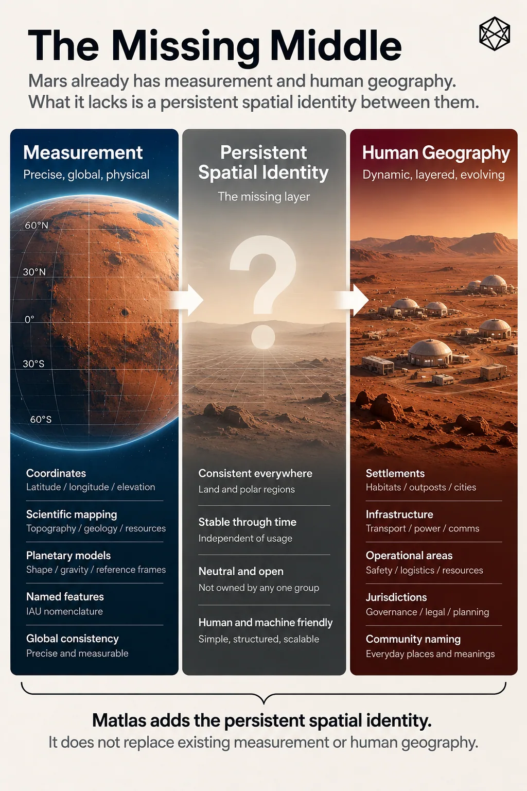

Why Earth Does Not Run on Coordinates
Measurement Is Not Geography
A modern phone can tell you where you are on Earth to within a few metres. Satellites can locate ships in the middle of oceans, aircraft above continents and survey equipment on construction sites with extraordinary precision. If civilisation merely needed to measure position, humanity solved the problem rather well.
Yet civilisation does not run on coordinates.
We still use addresses, neighbourhoods, postcodes, municipalities, counties, provinces, property parcels and service areas. A hospital has coordinates, but we give it an address. A house occupies one precise position, but it can also belong to a town, a local authority and several overlapping operational areas. Governments count populations by regions rather than publishing millions of dots and wishing statisticians luck.
Coordinates measure space.
Human systems have to organise activity across it.
Position is not membership
Latitude and longitude are exceptionally good at their job. Given an agreed reference system, they allow an arbitrary position on a planet to be described numerically and recovered elsewhere. They work whether the location is inhabited or empty, famous or anonymous, politically disputed or almost entirely ignored.
Nor is there any practical shortage of precision. Add enough decimal places and a coordinate can identify an extremely small area. Computers are perfectly comfortable storing such values, transforming them between reference systems and using them as the foundation for sophisticated digital maps.
So coordinates are not the weak link in this story.
The difference appears when two almost identical positions belong to different human systems.
Imagine two houses ten metres apart on opposite sides of a municipal boundary. Their coordinates differ only slightly, yet different councils might collect their rubbish, different schools might serve them and different planning rules could apply to extensions built in their gardens.
The geometry barely changes.
The membership does.
A coordinate tells you where the houses are. It does not, by itself, tell you which human structures contain them.
The ambulance problem
Emergency response makes this easier to see.
Suppose somebody collapses beside a remote road. A precise coordinate may be exactly what the ambulance crew needs, particularly if no conventional street address exists. It identifies the casualty far better than “somewhere beyond the old quarry”, and modern dispatch software can route a vehicle towards it.
The emergency system still has other questions. Which control centre handles the call? Which crew should respond? Which road actually reaches the casualty? Which hospital can receive them? If a major incident produces dozens of emergencies across the same area, where should extra crews be staged?
The casualty is one point. The response is a system.
Coordinates solve an indispensable part of that system, but the rest depends on areas, relationships and context. A coordinate can tell the ambulance where the casualty is; operating geography helps the wider system decide what to do about it.
Utilities work the same way. A power company can know the exact coordinate of every transformer without that coordinate revealing which customers lose power when one fails. A water operator can locate a valve without knowing from position alone which pressure zone it controls. A transport system can store every stop as a point while still needing routes and service regions to operate.
The physical location matters.
The system around it matters too.
Points are poor containers
The distinction becomes even clearer when the subject is not an individual object.
Suppose you want to know where population is growing. In principle, you could store the exact coordinate of every home and create a fantastically precise cloud of points. Assuming privacy, data volume and common sense were temporarily dealt with, the dataset might be spatially immaculate.
It would still be a poor answer to most useful questions.
You normally want to know which towns are growing, where another school may be needed, which districts are using more electricity or how population has shifted over twenty years. Those questions require many individual observations to be grouped into areas that can be compared repeatedly.
A coordinate preserves the individuality of an observation. A geographic area gives many observations a common container. The boundaries may be conventional, and another organisation may reasonably choose different ones, but without some form of aggregation the pattern remains buried inside the points.
Planning, law and infrastructure all repeat the same principle. A transport corridor covers an area. A maintenance team serves a region. A planning restriction applies inside a boundary. A lease, easement or mineral right describes some spatial extent rather than merely one representative point.
Modern coordinate geometry can describe those boundaries very precisely.
It cannot decide which areas civilisation finds useful.
That is an organisational decision.
The missing middle

Read a description of this illustration
The diagram treats coordinates as the measurement foundation. Matlas provides the middle layer of persistent geographical units. Names, policies, property, jurisdictions and other overlays remain separate and may cross the units.
Chapter 1 gave us two powerful things that Mars already possesses.
The first is measurement: coordinates, reference frames, imagery, terrain models and scientific maps capable of describing physical Mars with remarkable precision.
The second is nomenclature: a recognised vocabulary for important physical features.
Neither was designed to become the everyday structural geography of a civilisation. That is no criticism of either system; it simply means another question appears once humans begin building persistent activity across the surface.
At the other end lies the geography that settlement will eventually create for itself: local addresses, service areas, infrastructure networks, property, jurisdictions, neighbourhoods, culturally meaningful names and countless boundaries designed for particular purposes. Those systems will not all agree with one another, nor should they.
Between scientific measurement and that changing human geography lies a possible architectural gap.
A middle layer of this kind would do something quite modest. It would give pieces of physical Mars persistent structural identity, allow them to relate to larger and smaller areas, and provide a shared reference that different organisations could use without forcing those organisations to adopt identical legal, political or operational boundaries.
That is what this book means by an operating geography.
The word operating matters. The purpose is not to make Mars aesthetically tidy or produce the one true map. It is to make repeated coordination easier.
An emergency service, rover operator, scientific archive and settlement planner may all have perfectly good reasons to maintain different specialist maps. They do not need to agree on everything. There is still value if each can refer to a common piece of underlying ground and know that the reference remains intelligible outside its own system.
That is an interoperability problem wearing geographic clothing.
Stable underneath, flexible above
Earth provides a useful warning against expecting too much uniformity.
Our spatial systems are gloriously untidy. Postal areas ignore municipal borders. Electricity networks cross political regions. Property parcels follow survey histories. Watersheds decline to respect legislation. Metropolitan areas spread beyond the administrative boundaries supposedly containing them, while neighbourhood edges can support long arguments in pubs without either side needing to be entirely wrong.
Much of this apparent mess exists because different geographies genuinely perform different jobs.
A utility network should follow the logic of the utility network. A watershed should follow water. A property parcel should describe property. Political boundaries belong to politics. Trying to force every one of those systems into a single master geography would create neatness at the expense of usefulness.
What allows them to coexist is the stable physical basis underneath. A property polygon, city boundary and transport region can all be represented against the same coordinate framework even when none of their edges agrees. Mature geography often combines relatively stable reference underneath with considerable freedom above it.
Mars gives us the unusual opportunity to think about that separation before centuries of institutions have accumulated.
The design temptation will be obvious. Starting with an apparently clean planet, somebody will want to create one immaculate hierarchy that becomes the postal system, political map, statistical geography, land registry, emergency-service framework and perhaps the restaurant guide if nobody stops them.
That would be a mistake.
The useful design problem is smaller:
What is the minimum spatial structure worth making common before all the specialist geographies begin to diverge?
Measurement is not organisation
That question is the real conclusion of Part I.
Mars does not lack maps.
It does not lack coordinates.
It does not lack names for important physical features.
What permanent settlement may eventually lack is a thin shared structure for relating repeated human and machine activity to stable pieces of the planet without prematurely deciding what those pieces should mean culturally, legally or politically.
The principle is simple:
Measurement is not organisation.
A coordinate tells us where a point lies. A feature name tells us what an important physical thing is called. Neither, by itself, provides a stable hierarchy through which a distributed society can group information, move between useful scales or refer consistently to pieces of ground across different organisations.
Whether Mars actually needs such a layer is still an open design question.
Before drawing one, we need to decide which Mars we are designing it for.